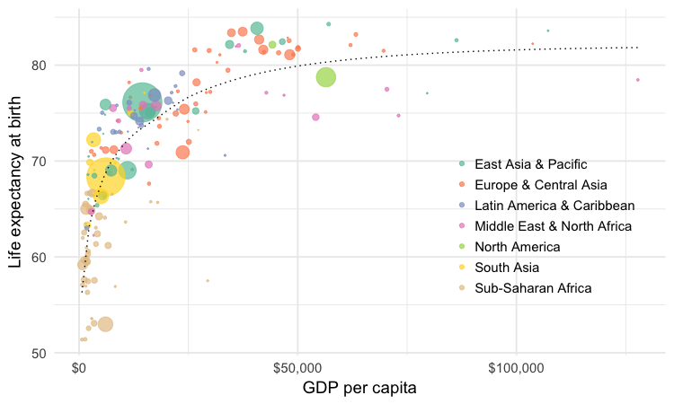
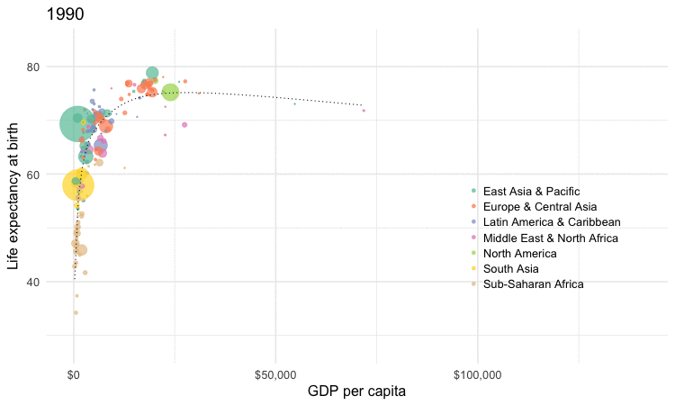
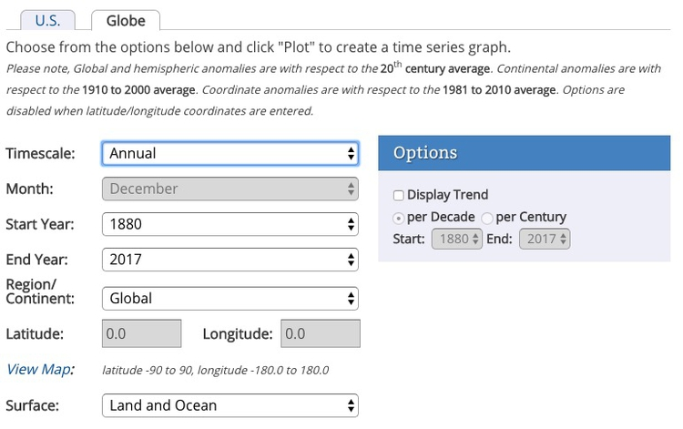
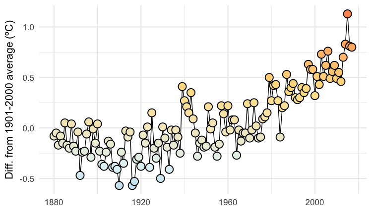
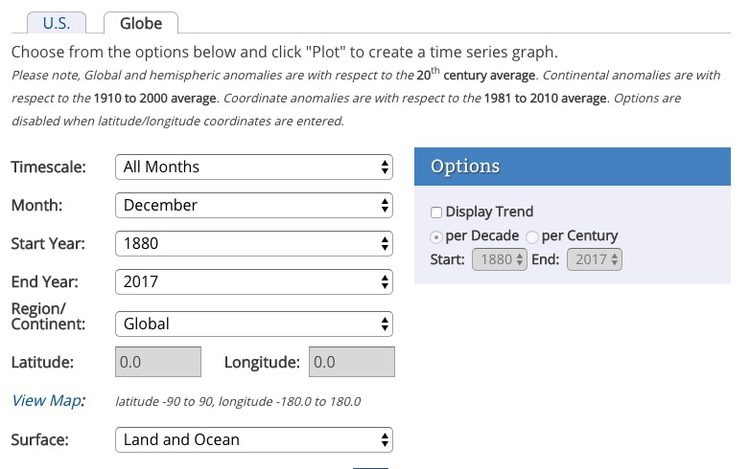
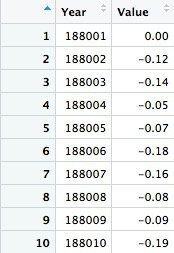

Animation: making GIFs and videos from R
In today’s class, we will make animated GIFs and videos from charts made in R using ggplot2. This depends on connecting R to two software libraries, ImageMagick (for processing images, including GIFs), and FFmpeg (for processing video). See the software page for installation instructions.
The data we will use today
Download the data for this session from here, unzip the folder and place it on your desktop. It contains the following file:
nations.csvData from the World Bank Indicators portal, as used previously.
Setting up
Launch RStudio, create a new RScript, and set the working directory to the folder with your downloaded data by selecting Session>Set Working Directory>To Source File Location. Save the script as animations.R.
Install devtools and gganimate packages
Today, we are going to animate ggplot2 graphics using the gganimate package, which is an extension to ggplot2. It depends upon ImageMagick and FFmpeg to make GIFs and videos.
gganimate is available on GitHub. To install from there, you first need to install the devtools package.
# load devtools
library(devtools)
# install gganimate
install_github("dgrtwo/gganimate")
Load the packages we will use today
# load required packages
library(readr)
library(ggplot2)
library(gganimate)
library(scales)
library(dplyr)
Apart from gganimate, we have encountered all of these packages in previous classes.
Make a Gapminder-style animated bubble chart
In our first class with ggplot2, we made the following chart, showing GDP per capita, life expectancy at birth and population for the world’s nations in 2015:

This is the code to generate that chart:
# load data
nations <- read_csv("nations.csv")
# filter for 2015 data only
nations2015 <- nations %>%
filter(year == 2015)
# make bubble chart
ggplot(nations2015, aes(x = gdp_percap, y = life_expect)) +
xlab("GDP per capita") +
ylab("Life expectancy at birth") +
theme_minimal(base_size = 14) +
geom_point(aes(size = population, color = region), alpha = 0.7) +
scale_size_area(guide = FALSE, max_size = 15) +
scale_x_continuous(labels = dollar) +
stat_smooth(formula = y ~ log10(x), se = FALSE, size = 0.5, color = "black", linetype="dotted") +
scale_color_brewer(name = "", palette = "Set2") +
theme(legend.position=c(0.8,0.4))
Some reminders about what this code does:
scale_size_areaensures that the size of the circles scales by their area according to the population data, up to the specifiedmax_size;guide = FALSEwithin the parentheses of this function prevents a legend for size being drawn.labels = dollarfrom scales formats the X axis labels as currency in dollars.stat_smoothworks likegeom_smoothbut allows you to use aformulato specify the type of curve to use for the trend line fitted to the data, here a logarithmic curve.
Now we will use gganimate to generate an animation of the chart, from 1990 to 2015. Here is the code:
nations_chart <- ggplot(nations, aes(x = gdp_percap, y = life_expect, frame = year)) +
xlab("GDP per capita") +
ylab("Life expectancy at birth") +
theme_minimal(base_size = 16) +
geom_point(aes(size = population, color = region), alpha = 0.7) +
scale_size_area(guide = FALSE, max_size = 20) +
scale_x_continuous(labels = dollar) +
stat_smooth(aes(group = year), formula = y ~ log10(x), se = FALSE, size = 0.5, color = "black", linetype="dotted") +
scale_color_brewer(name = "", palette = "Set2") +
theme(legend.position=c(0.8,0.4))
Running this code will create an R object of type gg called nations_chart.
Now display it in the Viewer panel by running the following:
gganimate(nations_chart)
This should be the result:

How the code works
I made a couple of small changes to the ggplot2 code from the static graphic to optimise the appearance of the animation, increasing both the base_size for the text, and the max_size for the scaled circles.
The most important change, however, is in the initial ggplot function, which now includes frame = year. In the animation, this is the code that creates a separate chart for each year in the data.
Also notice that the code that creates the trend line now includes aes(group = year). This is needed if we want to create a separate trend line for each year. Without this, a single trend line would be calculated for all the data across all the years, and would be static across the animation.
Save as a GIF and a video
Having made an animation, we can now save it as a GIF or a video:
# save as a GIF
gganimate(nations_chart, "nations.gif", ani.width = 750, ani.height = 450, interval = 0.2)
# save as a video
gganimate(nations_chart, "nations.mp4", ani.width = 800, ani.height = 450, interval = 0.1)
You can use the options ani.width and ani.height to set the dimensions, in pixels, of the animation; interval sets the interval between the frames, in seconds (the default is 1 second). For the video, I have set the ratio between width and height at 16:9, consistent with YouTube format.
Here is the video:
Add a pause to the final frame on a GIF
When making GIFs, it is often a good idea to add a longer pause on the final frame before the animation repeats. You can do this with the following code:
On the Mac:
# increase delay on final frame
system("convert nations.gif \\( +clone -set delay 300 \\) +swap +delete nations_with_pause.gif")
On Windows:
# increase delay on final frame
shell("convert nations.gif ( +clone -set delay 300 ) +swap +delete nations_with_pause.gif")
This code uses the system or shell function to send ImageMagick code to your wider computer system.
convert is one of the main commands in ImageMagick, used to convert between image formats as well as to manipulate images in a variety of ways. Here, delay 300 increases the delay on the final frame to 3 seconds.
Here is the revised GIF:
Make cumulative animations of historical global average temperature
For the Gapminder-style video, we displayed only the data for the year in question in each frame. In some cases, however, you may want to animate by adding data with each frame, and leaving the previously added data in place.
We will explore that now to make two animations of historical global temperature data from the National Oceanic and Atmospheric Administration (NOAA), similar to the video I made here, and the GIF here.
Navigate to NOAA’s Climate at a Glance time series page, and set the menus like this:

Scroll down to the data table, and hover over this icon:
This is a link to download a CSV, but we can’t load it directly into R if we have its URL, so right-click and Copy Link Address.
Now we can load the data:
# load data
global_temp_annual <- read_csv("https://www.ncdc.noaa.gov/cag/time-series/global/globe/land_ocean/1/12/1880-2017.csv", skip = 4)
The includes skip = 4 because there are four rows in the file before the column headers.
The following code will draw a dot-and-line chart from the data:
# draw chart
ggplot(global_temp_annual, aes(x = Year, y = Value)) +
geom_line(color = "black") +
geom_point(shape = 21, colour="black", aes(fill = Value), size=5, stroke=1) +
theme_minimal(base_size = 16) +
scale_fill_distiller(palette = "RdYlBu", limits = c(-2,2), guide = FALSE) +
xlab("") +
ylab("Diff. from 1901-2000 average (ºC)")
This should be the result:

This code uses ColorBrewer’s RdYlBu palette, which runs from cool blues, through neutral yellows, to warm reds, fitting well to temperature data diverging from a central value.
The palette is applied with the function scale_fill_distiller. This and the function scale_color_distiller can be used to apply ColorBrewer sequential and diverging palettes in a smooth gradient to continuous variables, see here for more. Setting limits = c(-2,2) applies the palette for values from -2 to +2 degrees C, ensuring that the neutral yellow at the middle of the diverging palette is applied to a value of zero.
As this is a dot-and-line chart, it includes both geom_line and geom_point layers. Notice that the geom_point function also defines a numbered shape: 21 is a circle with a filled area, see here for other options. By using this shape, we can set the outline color to black and then use an aes mapping to fill it with color from the selected palette, according to the values for the annual variable.
To animate this chart, adding a year of data with each frame, use the following code:
# animation
global_temp_annual_chart <- ggplot(global_temp_annual, aes(x = Year,
y = Value,
frame = Year,
cumulative = TRUE)) +
geom_line(color = "black") +
geom_point(shape = 21, color = "black", aes(fill = Value), size = 5, stroke = 1) +
theme_minimal(base_size = 16) +
scale_fill_distiller(palette = "RdYlBu", limits = c(-2,2), guide = FALSE) +
xlab("") +
ylab("Diff. from 1901-2000 average (ºC)")
# save as video
gganimate(global_temp_annual_chart, "warming_annual.mp4", ani.width = 800, ani.height = 450, interval = 0.1)
This time, the initial ggplot function also contains the code cumulative = TRUE, which adds one year of data with each frame, and leaves the previously added data in place.
This should be the result:
Now we’ll make an animation showing a line for each year, drawn theough the temperature values for each month.
Back at NOAA’s climate time series page, select these menu options:

Grab the URL for this data, as before, and load:
# load data
global_temp_monthly <- read_csv("https://www.ncdc.noaa.gov/cag/time-series/global/globe/land_ocean/all/12/1880-2017.csv", skip = 4)
The first few rows should look like this:

To animate this data by year, but plot each by month as if all the months were in the same year, we need to process the data as follows:
# process data
global_temp_monthly <- global_temp_monthly %>%
rename(Yr_Mo = Year) %>%
mutate(Year = as.integer(substr(Yr_Mo,1,4)),
Date = as.Date(paste0(substr(Yr_Mo,1,4),
"-",
substr(Yr_Mo,5,6),
"-01")),
Date_2017 = as.Date(paste0("2017-",
substr(Yr_Mo,5,6),
"-01")))
This code renames Year, which actually contains year and numeric month, to Yr_Mo. Then it uses the function substr to pull out the first four digits the create a new Year variable. It then creates two date columns, setting the date to the 1st of each month, and in the second case places all the dates in 2017. This sleight of hand is necessary to plot them as dates and have the lines stack up over one another. We can discuss why in class.
This code draws a chart with a line for every year:
# draw chart
ggplot(global_temp_monthly, aes(x=Date_2017,
y=Value,
color = Value,
group = Year)) +
geom_line(size = 0.5, alpha = 0.5) +
theme_dark(base_size = 20) +
scale_color_distiller(palette = "RdYlBu", limits = c(-2,2), guide = FALSE) +
ylab("Diff. from C20th average (ºC)") +
xlab("") +
scale_x_date(date_labels = "%b",
date_breaks = "month") +
theme(panel.grid.minor = element_blank())
In the aes mapping, it is necessary to use group = Year to ensure that a separate line is drawn for each year.
The code uses another ggplot2 built-in theme, theme_dark, to make the lightly colored lines show up against a dark background. The second theme function removes some of the grid lines.
scale_x_date sets the breaks for the data as monthly, and formats the date labels as the abbreviated month (Jan, Feb, etc). See what happens if you comment out this part of the code.
This code will create a cumulative animation of the data:
# animation
global_temp_monthly_chart <- ggplot(global_temp_monthly, aes(x=Date_2017,
y=Value,
color = Value,
group = Year,
frame = Year,
cumulative = TRUE)) +
geom_line(size = 0.5, alpha = 0.5) +
theme_dark(base_size = 20) +
scale_color_distiller(palette = "RdYlBu", limits = c(-2,2), guide = FALSE) +
ylab("Diff. from C20th average (ºC)") +
xlab("") +
scale_x_date(date_labels = "%b",
date_breaks = "month") +
theme(panel.grid.minor = element_blank())
# save as GIF
gganimate(global_temp_monthly_chart, "warming_monthly.gif", ani.width = 750, ani.height = 450, interval = 0.1)
Again, we can increase the delay on the final frame of the GIF:
On the Mac:
# increase delay on final frame
system("convert warming_monthly.gif \\( +clone -set delay 300 \\) +swap +delete warming_monthly_with_pause.gif")
On Windows:
# increase delay on final frame
shell("convert warming_monthly.gif ( +clone -set delay 300 ) +swap +delete warming_monthly_with_pause.gif")
This should be the result: